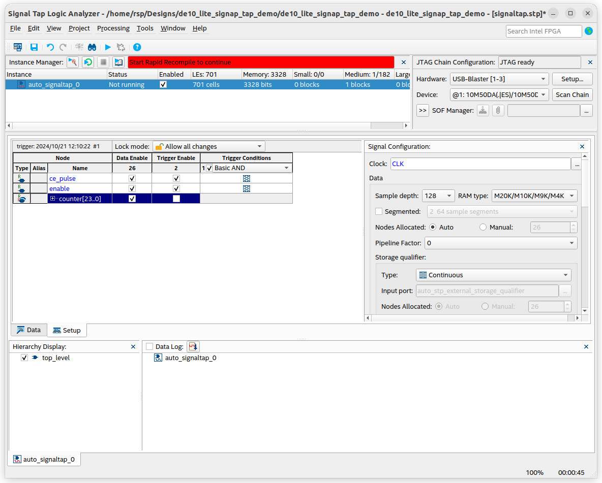

แนะนำการใช้งานซอฟต์แวร์ Signal Tap Logic Analyzer#
Keywords: Intel / Altera FPGA, Signal Tap, Embedded Logic Analyzer, FPGA Debugging
▷ แนะนำซอฟต์แวร์ Logic Analyzer for FPGA Design#
การดีบักวงจรดิจิทัล (Logic Design Debugging) อาจต้องอาศัยการสังเกตการเปลี่ยนแปลงของสัญญาณที่เกิดขึ้นภายในชิปในแต่ละช่วงเวลา การที่จะมองเห็นสถานะลอจิกได้ (Visibility) จะต้องมีการเลือกและนำสัญญาณดังกล่าวไปยังวงจรลอจิกเพื่อการดีบัก และสำหรับวัตถุประสงค์นี้ เครื่องมือสำหรับวิเคราะห์เชิงลอจิกสำหรับชิป FPGA (FPGA Logic Analyzer) จึงเป็นเครื่องมือที่สามารถนำมาใช้ได้ แต่ละบริษัท FPGA Vendors ก็มีซอฟต์แวร์ของตัวเอง เช่น
- Intel / Altera: Signal Tap / Quartus Prime
- AMD / Xilinx: ChipScope Integrated Logic Analyzer (ILA) / Vivado Design Suite
- Lattice Semiconductor: Reveal Logic Analyzer / Lattice Diamond Design Suite
- Gowin Semiconductor: **Gowin Analysis Oscilloscope (GAO) / GOWIN EDA **
วงจรดิจิทัลสำหรับการดีบักประเภทนี้มักเรียกว่า Embedded Logic Analyzer (ELA) หรือ On-chip Logic Analyzer ทำหน้าที่อ่านค่าลอจิกของสัญญาณดิจิทัลภายในชิป FPGA ในขณะที่วงจรทำงาน และบันทึกข้อมูลลงในหน่วยความจำ
Signal Tap Logic Analyzer เป็นชื่อของเครื่องมือประเภทซอฟต์แวร์ และเป็นส่วนหนึ่งของ Quartus Prime Software สำหรับการออกแบบวงจรดิจิทัลด้วยชิป FPGA เหมาะสำหรับการวิเคราะห์สัญญาณดิจิทัลและดีบักการทำงานของวงจรดิจิทัลภายในชิป FPGA และสามารถใช้งานได้ฟรีสำหรับ Quartus Prime Lite Edition
Signal Tap IP Core เป็น Soft IP Core หรือวงจรดิจิทัลที่ถูกสร้างขึ้นโดยอัตโนมัติตามรูปแบบการตั้งค่าการใช้งานโดยผู้ใช้ และจะถูกนำไปใส่รวมกับวงจรดิจิทัลที่ได้มีการออกแบบโดยผู้ใช้ (หรือ User Design) ดังนั้นวงจรส่วนนี้จึงต้องใช้ทรัพยากรของชิป FPGA ด้วย
รูป: บล็อกไดอะแกรมสำหรับ Signal Tap Logic Analyzer (Source: Intel / Altera)
รูป: ซอฟต์แวร์ในส่วน GUI สำหรับ Signal Tap Logic Analyzer (Source: Intel / Altera)
รูป: ลำดับขั้นตอนการใช้งาน Signal Tap Logic Analyzer ในซอฟต์แวร์ Quartus Prime (Source: Intel / Altera)
ผู้ใช้จะต้องตั้งค่าเงื่อนไขสำหรับ Signal Trigger Conditions และเลือกสัญญาณในวงจรดิจิทัลที่ต้องการบันทึกค่า (Signal Selection for Probing) และระบุขนาดของหน่วยความจำที่ใช้ในการบันทึกข้อมูล (Memory Depth)
คำว่า "ทริกเกอร์" (Trigger) หมายถึง การเริ่มต้นทำงานของวงจรวิเคราะห์เชิงลอจิก และมีการบันทึกข้อมูลลงในหน่วยความจำ เมื่อทริกเกอร์เกิดขึ้นแล้ว การบันทึกข้อมูลของสัญญาณอาจเป็นแบบต่อเนื่อง (AUTO / Continuous) มีการเขียนข้อมูลลงในหน่วยความจำ จนเต็มความจุ แล้วส่งไปยังคอมพิวเตอร์ของผู้ใช้โดยอัตโนมัติ แล้วทำซ้ำในลักษณะนี้ต่อเนื่องไปจนกว่าจะถูกยกเลิกการทำงานโดยผู้ใช้
การบันทึกข้อมูลอาจเป็นแบบมีเงื่อนไขได้ เช่น เมื่อเกิดเหตุการณ์ที่เป็นไปตามเงื่อนไขสำหรับการเริ่มต้น (Start Condition) ให้เขียนข้อมูลลงในหน่วยความจำ และถ้าเงื่อนไขสำหรับหยุด (Stop Condition) เป็นจริง ก็ให้หยุดการทำงานชั่วคราว
ข้อมูลที่ถูกบันทึกในหน่วยความจำ จะถูกอ่านออกมาจากชิป FPGA โดยใช้อุปกรณ์ USB-JTAG FPGA Programmer อย่างเช่น USB Blaster แล้วแสดงให้อยู่ในรูปคลื่นสัญญาณดิจิทัล (Signal Waveforms) ด้วยซอฟต์แวร์
การตั้งค่าเงื่อนไขสำหรับ Trigger Conditions แบ่งเป็นสองประเภทหลักคือ
- ประเภทแรกเป็นเหตุการณ์ขอบขาขึ้นหรือขาลง (Edge Type: Rising-Edge, Falling-Edge, Either Edge)
- อีกประเภทหนึ่งคือ ดูจากระดับของสัญญาณหรือค่าลอจิก เช่น Low-Level (0) หรือ High-Level (1) เป็นต้น
ผู้ใช้สามารถสร้างเงื่อนไขเชิงลอจิกที่มีหลายเงื่อนไขย่อยได้ โดยการใช้ตัวดำเนินการเชิงลอจิก (อย่างเช่น AND, OR, NOT) ให้เป็นนิพจน์เชิงลอจิก (Logical Expression)
สัญญาณที่นำมาใช้ในการสร้างเงื่อนไขสำหรับ Trigger คือ สัญญาณจากภายในวงจร (Internal Trigger Source) หรืออาจเป็นสัญญาณภายนอกก็ได้ (External Trigger Input) ผ่านเข้ามาทางขา I/O ของชิป FPGA
ชนิดและปริมาณทรัพยากรของชิปที่จะต้องใช้สำหรับวงจรของ SignalTap IP Core ขึ้นอยู่กับการตั้งค่า เช่น เงื่อนไขสำหรับทริกเกอร์ และจำนวนสัญญาณและจำนวนข้อมูลที่ต้องการบันทึก ถ้าต้องใช้หน่วยความจำความจุมาก แนะนำให้เลือกใช้ Block RAM ในชิป FPGA เช่น หน่วยความจำแบบบล็อก M9K ในชิป MAX 10 FPGA เป็นต้น
ในหนึ่งโปรเจกต์ ผู้ใช้สามารถสร้างวงจร Signal Tap เรียกว่า Signal Tap Instance และการตั้งค่าที่เกี่ยวข้องมีดังนี้
- Data: การตั้งค่าในส่วนของข้อมูล เช่น จำนวนช่องสัญญาณ (ไม่เกิน 4096) จำนวนข้อมูลที่สามารถบันทึกได้สูงสุดสำหรับแต่ละสัญญาณ (Memory Depth) และชนิดของหน่วยความที่จะใช้ เช่น AUTO (ซอฟต์แวร์จะเลือกให้เองโดยอัตโนมัติ) หรือเจาะจงใช้ Block RAM เป็นต้น
- Segmented Acquisition (Buffer Type): การใช้หน่วยความจำสำหรับเงื่อนไขทริกเกอร์ครั้งเดียว (Non-segmented Buffer) หรือ จะแบ่งออกเป็นหลายส่วน (Segmented Buffer) แต่ละส่วนใช้กับเงื่อนไขทริกเกอร์แยกกันตามลำดับ (ทริกเกอร์เกิดขึ้นได้หลายครั้ง)
- Storage Qualifier: การเลือกรูปแบบหรือเงื่อนไขสำหรับการบันทึกข้อมูลเมื่อเกิดเหตุการณ์ทริกเกอร์ การใช้ Storage Qualifier ที่เหมาะสม ก็ช่วยประหยัดการบันทึกข้อมูลที่อาจไม่จำเป็นลงในบัฟเฟอร์
- Trigger: การเลือกสัญญาณสำหรับนำมาใช้ตั้งเงื่อนไขของทริกเกอร์ การกำหนดเงื่อนไขทริกเกอร์ (Trigger Conditions)
- Pipeline Factor: การกำหนดระดับของการทำงานแบบ Pipeline ซึ่งเป็นการเพิ่มรีจิสเตอร์ (เรียกว่า Pipeline Registers) ในวงจรดิจิทัล เพื่อช่วยให้วงจรสามารถทำงานด้วยความถี่ของสัญญาณ CLK สูงขึ้นได้ (หรือค่า Fmax)
- Trigger Position: การกำหนดตำแหน่งการเริ่มบันทึกข้อมูลนับจากเหตุการณ์ที่เกิดขึ้นตามเงื่อนไขของทริกเกอร์
แบ่งออกเป็น 3 กรณี
- Post-trigger position: บันทึกข้อมูลหลังการเกิดทริกเกอร์
- Pre-trigger position: บันทึกข้อมูลก่อนการเกิดทริกเกอร์
- Center-trigger position: บันทึกข้อมูลทั้งก่อนและหลังการเกิดทริกเกอร์
- Node Search: หมายถึง การค้นหาชื่อและเลือกสัญญาณในวงจรดิจิทัลเพื่อนำมาใช้กับวงจร Signal Tap
แบ่งเป็นหลายประเภท เช่น
- Pre-Synthesis Nodes: ชื่อของสัญญาณที่ยังปรากฎอยู่หลังจากทำขั้นตอน Design Analysis & Elaboration แต่ยังไม่ได้ทำขั้นตอน Synthesis Optimization
- Post-Fit Nodes : ชื่อของสัญญาณที่ยังปรากฎอยู่หลังจากทำขั้นตอน Fitting ซึ่งเป็นไปได้ว่า บางสัญญาณในโค้ด HDL อาจถูกตัดออกไปในขั้นตอน Logic Optimization สัญญาณเหล่านี้สามารถตรวจสอบดูได้จาก Tools ➤ Netlist Viewers ➤ Technology Map Viewer (Post-Fitting)
- สัญญาณในวงจรสามารถถูกเลือกมาใช้สำหรับ Signal Tap Logic Analyzer มี 3 กรณี
- Data Enable: สัญญาณได้ถูกเลือกเพื่อนำไปบันทึกลงในหน่วยความจำ
- Trigger Enable: สัญญาณได้ถูกเลือกเพื่อนำไปสร้างเงื่อนไขทริกเกอร์
- Storage Enable: สัญญาณได้เลือกเพื่อนำไปใช้ในการสร้างเงื่อนไขของ Storage Qualifier
- Storage Qualifier คือ ตัวกำหนดเงื่อนไขในการเขียนข้อมูล (Write Enable)
ลงในหน่วยความจำ (ใช้กับ Non-segmented Data Buffer) มีหลายรูปแบบให้เลือกใช้ เช่น
- Continuous (default): ปิดการใช้งาน Storage Qualifier ดังนั้นจึงเป็นการบันทึกข้อมูลทุก ๆ ไซเคิลของสัญญาณ CLK ต่อเนื่องไป
- Input port: ใช้สัญญาณใดสัญญาณหนึ่งในวงจร เป็นสัญญาณควบคุม Write Enable สำหรับการเขียนข้อมูลลงในหน่วยความจำ
- Conditional: สร้างเงื่อนไขลอจิกสำหรับ Write Enable โดยใช้โอเปอร์เรเตอร์ AND, OR, NOT และการตรวจสอบระดับและการเปลี่ยนแปลงสถานะของสัญญาณที่เลือกมา
- Transitional บันทึกข้อมูลเมื่อมีการเปลี่ยนแปลงค่าเท่านั้น ถ้าสัญญาณมีค่าซ้ำเดิมในแต่ละไซเคิล ก็จะไม่บันทึกซ้ำ จนกว่าจะมีค่าใหม่
- Start / Stop: กำหนดเงื่อนไขเพื่อเริ่มบันทึกข้อมูล และเงื่อนไขสำหรับหยุดการบันทึก (Start & Stop Conditions) หรือจะตั้งค่าให้เป็น Don't Care ทั้งหมดก็ได้ ซึ่งจะให้ผลเหมือนการบันทึกค่าทุก ๆ ไซเคิล แต่ต้องกำหนดเงื่อนไขทริกเกอร์ด้วย จากนั้นจึงใช้วิธีกดปุ่ม Run Analysis / Stop Analysis (Start / Stop) ในหน้า GUI โดยผู้ใช้เอง
การตั้งค่าใช้งานสำหรับ Signal Tap จะถูกเก็บลงในไฟล์ .stp (Signal Tap Logic Analyzer File)
และเป็นส่วนหนึ่งของโปรเจกต์
▷ การใช้งาน Signal Tap สำหรับวงจรดิจิทัลตัวอย่าง#
การใช้งานและตั้งค่า Signal Tap ทำได้ไม่ยาก และเพื่อการสาธิต ถัดไปจะใช้วงจรดิจิทัลที่เขียนด้วยภาษา VHDL เป็นตัวอย่าง ทดลองใช้กับบอร์ด DE10-Lite (MAX 10 FPGA) และใช้ Quartus Prime Lite Edition v22.1
วงจรมีอินเทอร์เฟซดังนี้
CLK: 50 MHz clock (input)RESET_N: Active-low asynchronous reset (input)ENA: Count enable (input)LEDR[9:0]: 10-bit output for onboard LEDs (output)
วงจรนี้ใช้ความถี่ 50MHz มีตัวนับแบบไบนารีขนาด 24 บิต (ตามค่าของพารามิเตอร์ BW)
โดยให้นับขึ้นทีละหนึ่งด้วยอัตรา 1MHz และจะนับขึ้นก็ต่อเมื่อสัญญาณอินพุต ENA=1 (หรือสัญญาณ enable=1)
ภายในมีวงจรสร้างสัญญาณพัลส์ ce_pulse (Clock Enable Pulse)
ทุก ๆ 1 ไมโครวินาที และใช้สำหรับกำหนดจังหวะการนับขึ้นของตัวนับ 24 บิต
สัญญาณอินพุต RESET_N ทำงานแบบ Active-low ใช้สำหรับรีเซตการทำงานของวงจรดิจิทัล
เอาต์พุตมีขนาด 10 บิต นำไปต่อกับวงจร LED บนบอร์ด FPGA โดยเลือกมาใช้ 10 บิต เป็นสำคัญสุดจากรีจิสเตอร์ของวงจรตัวนับขนาด 24 บิต
library ieee;
use ieee.std_logic_1164.all;
use ieee.numeric_std.all;
entity top_level is
generic (
BW : integer := 24
);
port (
CLK : in std_logic; -- 50 MHz clock input
RESET_N : in std_logic; -- Active-low asynchronous reset
ENA : in std_logic; -- Count enable (active-high)
LEDR : out std_logic_vector(9 downto 0) -- 10-bit output
);
end entity top_level;
architecture behavioral of top_level is
constant SYS_CLK : integer := integer(50e6); -- 50MHz
constant CNT_CLK : integer := integer(1e6); -- 1MHz
constant CLK_DIV : integer := SYS_CLK / CNT_CLK - 1;
signal clk_div_cnt : integer := 0;
signal ce_pulse : std_logic := '0';
signal enable : std_logic := '0';
signal counter : unsigned(BW-1 downto 0) := (others => '0');
begin
clk_pulse_gen: process (CLK, RESET_N)
begin
if RESET_N = '0' then
clk_div_cnt <= 0;
ce_pulse <= '0';
elsif rising_edge(CLK) then
if clk_div_cnt = CLK_DIV then
ce_pulse <= '1';
clk_div_cnt <= 0;
else
ce_pulse <= '0';
clk_div_cnt <= clk_div_cnt + 1;
end if;
end if;
end process;
upcounter_proc: process (CLK, RESET_N)
begin
if RESET_N = '0' then
counter <= (others => '0');
enable <= '0';
elsif rising_edge(CLK) then
enable <= ENA;
if ce_pulse = '1' and enable = '1' then
counter <= counter + 1;
end if;
end if;
end process;
-- Output the 10 most-significant bits of the 24-bit counter to the LEDs
LEDR <= std_logic_vector(counter(counter'left downto counter'length-10));
end architecture behavioral;

รูป: การคอมไพล์โค้ด VHDL สำหรับโปรเจกต์ตัวอย่าง
รูป: การกำหนดขา I/O Pins สำหรับบอร์ด DE10-Lite ที่ได้เลือกใช้
รูป: การตรวจสอบการเลือกใช้ขา I/O Pins ในส่วนของ Pin Planner
File: set_pins.tcl (ไฟล์ Tcl Script สำหรับการเลือกใช้ขาของ FPGA)
#============================================================
# FPAG pin assignments
#set_global_assignment -name FAMILY "MAX 10 FPGA"
#set_global_assignment -name DEVICE 10M50DAF484C7G
#============================================================
set_location_assignment PIN_P11 -to CLK
set_instance_assignment -name IO_STANDARD "3.3-V LVTTL" -to CLK
set_location_assignment PIN_B8 -to RESET_N
set_instance_assignment -name IO_STANDARD "3.3 V SCHMITT TRIGGER" -to RESET_N
set_location_assignment PIN_C10 -to ENA
set_instance_assignment -name IO_STANDARD "3.3-V LVTTL" -to ENA
set_location_assignment PIN_A8 -to LEDR[0]
set_location_assignment PIN_A9 -to LEDR[1]
set_location_assignment PIN_A10 -to LEDR[2]
set_location_assignment PIN_B10 -to LEDR[3]
set_location_assignment PIN_D13 -to LEDR[4]
set_location_assignment PIN_C13 -to LEDR[5]
set_location_assignment PIN_E14 -to LEDR[6]
set_location_assignment PIN_D14 -to LEDR[7]
set_location_assignment PIN_A11 -to LEDR[8]
set_location_assignment PIN_B11 -to LEDR[9]
set_instance_assignment -name IO_STANDARD "3.3-V LVTTL" -to LEDR[0]
set_instance_assignment -name IO_STANDARD "3.3-V LVTTL" -to LEDR[1]
set_instance_assignment -name IO_STANDARD "3.3-V LVTTL" -to LEDR[2]
set_instance_assignment -name IO_STANDARD "3.3-V LVTTL" -to LEDR[3]
set_instance_assignment -name IO_STANDARD "3.3-V LVTTL" -to LEDR[4]
set_instance_assignment -name IO_STANDARD "3.3-V LVTTL" -to LEDR[5]
set_instance_assignment -name IO_STANDARD "3.3-V LVTTL" -to LEDR[6]
set_instance_assignment -name IO_STANDARD "3.3-V LVTTL" -to LEDR[7]
set_instance_assignment -name IO_STANDARD "3.3-V LVTTL" -to LEDR[8]
set_instance_assignment -name IO_STANDARD "3.3-V LVTTL" -to LEDR[9]
#============================================================
# End of pin assignments
#============================================================
▷ การเพิ่ม Signal Tap Logic Analyzer ในวงจรของผู้ใช้#
เมื่อสร้างโปรเจกต์ใน Quartus Prime Lite Edition เขียนโค้ด VHDL ตามโค้ดตัวอย่าง กำหนดขาสัญญาณสำหรับบอร์ด FPGA และคอมไพล์ตามลำดับของ FPGA Design Flow ได้สำเร็จแล้ว ขั้นตอนถัดไปคือ การเพิ่มวงจร Signal Tap เข้าไว้ในโปรเจกต์
ในหน้าต่างหลักของ Quartus Prime เริ่มต้นด้วยเมนูคำสั่ง File ➤ New ➤ Verification / Debugging Files เลือก Signal Tap Logic Analyzer จากนั้นจะเปิดหน้าต่างใหม่สำหรับ Signal Tap
รูป: สร้างไฟล์ Signal Tap Logic Analyzer File และเพิ่มไว้ในโปรเจกต์
ขั้นตอนการตั้งค่าใช้งาน Signal Tap Instance
- เลือกสัญญาณ
CLKของวงจร (ผู้ใช้สามารถค้นหาชื่อสัญญาณได้โดยใช้ Node Finder ) เพื่อใช้กับ Signal Tap เช่น ใช้สัญญาณ CLK 50MHz ของบอร์ด FPGA ดังนั้นความถี่นี้จึงเป็นตัวกำหนดค่า Sample Rate - เลือกสัญญาณที่ต้องการอ่านค่า และบันทึกลงในหน่วยความจำ (ค่าเริ่มต้นสำหรับขนาดของหน่วยความจำ หรือ Memory Depth คือ 128) เช่น สัญญาณจากรีจิสเตอร์ของวงจรตัวนับ และสัญญาณอื่นของวงจรที่สนใจ
- เลือกสัญญาณที่จะใช้เป็น Trigger Source และตั้งค่า Trigger Condition เช่น สัญญาณควบคุมการทำงานของตัวนับ
- เมื่อตั้งค่าการใช้งาน Signal Tap ในเบื้องต้นแล้ว ให้บันทึกการตั้งค่าลงในไฟล์
.stpให้เป็นส่วนหนึ่งของโปรเจกต์ การแก้ไขการตั้งค่าใด ๆ สำหรับ Signal Tap จะต้องมีการทำขั้นตอน Compilation สำหรับโปรเจกต์ทุกครั้ง และอัปโหลดไฟล์บิตสตรีมไปยังบอร์ด FPGA
รูป: ตั้งค่าการใช้งานในส่วน Setup Tab
รูป: ค้นหา Node ซึ่งเป็นชื่อสัญญาณ CLK เพื่อใช้กับวงจร Signal Tap
รูป: ค้นหาและเพิ่ม Node สำหรับสัญญาณที่ต้องการบันทึกค่า เช่น สัญญาณ counter
ซึ่งเป็นค่าของรีจิสเตอร์ของวงจรตัวนับ

รูป: ตรวจสอบการตั้งค่าเงื่อนไขสำหรับทริกเกอร์

รูป: บันทึกการตั้งค่าและเริ่มขั้นตอน Start Compilation ใหม่อีกครั้ง
เมื่อคอมไพล์โปรเจกต์ใหม่และอัปโหลดไฟล์ "บิตสตรีม" โดยใช้ Quartus Programmer ไปยังบอร์ด FPGA ผ่านทาง USB Blaster ได้สำเร็จ ซอฟต์แวร์จะขึ้นสถานะเป็น "Ready to acquire" จากนั้นให้กดปุ่ม "Run Analysis" เพื่อเริ่มต้นทำงาน
รูป: ตัวอย่างการแสดงผลข้อมูลที่บันทึกได้ตามการเปลี่ยนแปลงเชิงเวลา เป็นคลื่นสัญญาณดิจิทัล (ในกรณีที่เลือก Storage Qualifier: Continuous และไม่ได้ระบุเงื่อนไขทริกเกอร์)
หากไม่ได้กำหนดเงื่อนไขทริกเกอร์ เมื่อวงจร Signal Tap ทำงาน ก็จะอ่านค่าสัญญาณแบบต่อเนื่องไปจนกว่าจะกดปุ่มหยุด
ถัดไปลองเปลี่ยนมาตั้งค่าทริกเกอร์ โดยเลือกสัญญาณในวงจรมาสร้างเงื่อนไข
เช่น ทริกเกอร์เกิดขึ้นเมื่อสัญญาณ enable มีการเปลี่ยนแปลงสถานะลอจิก
และลองเปลี่ยนมาใช้ Storage Qualifier: Start / Stop และใช้เงื่อนไขเป็น Don't Care ทั้งหมด
ดังนั้นเมื่อเกิดทริกเกอร์ จะบันทึกข้อมูลทุก ๆ ไซเคิลตามจังหวะของสัญญาณ CLK จนเต็มบัฟเฟอร์
รูป: การตั้งค่าทริกเกอร์โดยใช้วิธีตรวจสอบการเปลี่ยนแปลงของสัญญาณ enable ในวงจร
รูป: การเลือกใช้ Storage Qualifier: Start / Stop
รูป: ตัวอย่างคลื่นสัญญาณดิจิทัลจากข้อมูลที่บันทึกได้ และตำแหน่งการเกิดทริกเกอร์
ถัดไปเป็นอีกหนึ่งตัวอย่างการตั้งค่า
- เงื่อนไขการเกิดทริกเกอร์: เมื่อเกิดขอบขาขึ้น (Rising Edge) ของสัญญาณรีเซต
RESET_N - การตั้งค่า Storage Qualifier: เลือกแบบ Start / Stop
โดยให้เริ่มบันทึกข้อมูลเมื่อสัญญาณ
ce_pulse=1และenable=1และหยุดการบันทึกข้อมูลชั่วคราวเมื่อce_pulse=0
รูป: การเลือกใช้ Storage Qualifier: Start / Stop
รูป: ตัวอย่างคลื่นสัญญาณดิจิทัลจากข้อมูลที่บันทึกได้ และตำแหน่งการเกิดทริกเกอร์ (เมื่อสัญญาณ RESET_N
เปลี่ยนจากลอจิก 0 เป็น 1) และหลังจากเกิดทริกเกอร์จะเห็นได้ว่า ค่าของวงจรตัวนับได้ถูกรีเซต
▷ การทดลองใช้งาน Advanced Trigger Conditions#
ถัดไปเป็นการทดลองใช้เงื่อนไขทริกเกอร์ ที่มีความซับซ้อนมากขึ้น และกำหนดเงื่อนไข โดยใช้ Advanced Trigger Condition Editor เช่น การเลือกใช้ ELD (Edge & Level Detector) และโอเปอร์เรเตอร์รูปแบบต่าง ๆ
ตัวอย่างต่อไปนี้เป็นการสร้างเงื่อนไขทริกเกอร์ เช่น สัญญาณ enable ที่มีการเปลี่ยนแปลงค่าลอจิก
เป็น "ขอบขาขึ้น" หรือ "ขอบขาลง" ก็ได้ (Either Edge) และสัญญาณ ce_pulse มีค่าลอจิก 1 ด้วย

รูป: ตัวอย่างการตั้งค่า Advanced Trigger Condition แบบที่ 1
รูป: การแสดงรูปคลื่นสัญญาณจากข้อมูลที่ได้
ลองแก้ไขเพิ่มเติมเงื่อนไขทริกเกอร์ เช่น สัญญาณ enable ที่การเปลี่ยนแปลงลอจิก
(Either Edge) และ สัญญาณ ce_pulse มีค่าลอจิก 1 และเมื่อสัญญาณ
counter ซึ่งเป็นข้อมูลแบบ 24-bit Unsigned มีค่าเท่ากับ 9999 (dec)
รูป: ตัวอย่างการตั้งค่า Advanced Trigger Condition แบบที่ 2
รูป: การแสดงรูปคลื่นสัญญาณจากข้อมูลที่ได้จากบอร์ด FPGA
▷ กล่าวสรุป#
บทความนี้ได้นำเสนอตัวอย่างการใช้งาน Signal Tap Logic Analyzer ซึ่งเป็นส่วนหนึ่งของซอฟต์แวร์ Quartus Prime Lite Edition (v22.1) และสาธิตให้เห็นว่า การใช้งานเครื่องมือประเภทนี้ช่วยให้นักออกแบบวงจรดิจิทัล สามารถดีบักการทำงานของวงจร โดยเลือกดูสัญญาณของวงจรในชิป FPGA และการตั้งค่าเงื่อนไขทริกเกอร์ ดังนั้น Embedded Logic Analyzer จึงถือว่าเป็นอีกตัวเลือกหนึ่งแทนการใช้เครื่องมือวัดภายนอก เช่น ออสซิลโลสโคป หรือ เครื่องวิเคราะห์สัญญาณลอจิกภายนอก
This work is licensed under a Creative Commons Attribution-ShareAlike 4.0 International License.
Created: 2024-10-21 | Last Updated: 2024-10-26